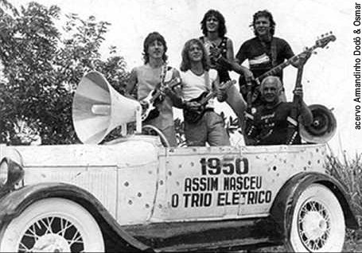
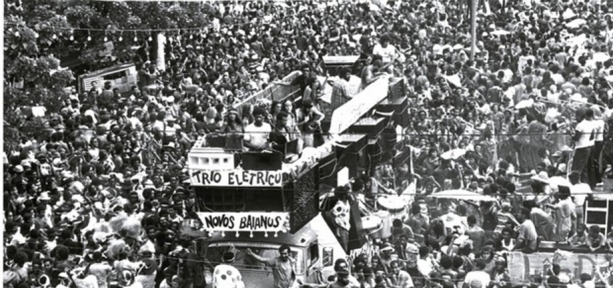

História
A origem do carnaval baiano é a mesma de todos os carnavais comemorados nas áreas urbanas brasileiras no início do século 20. Blocos, cordões e sociedades carnavalescas existiam em todo o estado. As manifestações mais populares eram concentradas na Baixa do Sapateiro, onde a grande diversão era fazer brincadeiras muito próximas as do entrudo. É na década de 50 que o carnaval baiano começa a tomar a forma que conhecemos hoje - com foliões se divertindo atrás de carros de som, que posteriormente, seriam batizados de trios elétricos.
Trio elétrico é o nome pelo qual é chamado o caminhão adaptado com aparelhos de sonorização com estrutura para shows de aproximadamente sete horas. O carro que deu origem ao que chamamos de trio elétrico hoje foi criado pelos amigos Adolfo Antônio do Nascimento (Dodô) e Osmar Alvares Macedo (Osmar), no ano de 1950. Osmar, que era proprietário de uma oficina mecânica, decidiu decorar um Ford 1929 com vários círculos coloridos, como se fossem confetes e colou uma placa com os dizeres "Dupla elétrica". Dodô montou uma fonte que foi ligada à corrente de uma bateria de automóvel, que alimentava o funcionamento dos alto-falantes instalados no carro. A dupla saiu no domingo de carnaval pelas ruas de Salvador e arrastou milhares de folião. No ano seguinte, a dupla convidou um amigo para formar um trio, o "trio elétrico".
A partir de então, novos trios elétricos surgiram no carnaval de Salvador. Nessa época, os músicos ainda tocavam em cima de caminhonetes, em estruturas bem diferentes dos trios atuais. Na década de 60, a Prefeitura de Salvador começou a promover concursos de trios elétricos, assim, os desfiles dos trios se tornava tradição na Bahia. Isso permitiu que no decorrer dos anos, os carros fossem aperfeiçoados e já na década de 80 existiam trios com palcos giratórios e elevadores automáticos.
No início da década de 1990, o carnaval de Salvador passa a ser profissionalmente comercializado e atrai dezenas de patrocinadores, sem necessitar tanto do aporte da Prefeitura de Salvador. A partir de então, novos ritmos passaram a fazer parte da festa, como o pagode e a música afro.
Para organizar o público de cada bloco carnavalesco e tornar os trios economicamente rentáveis foram criados os abadás, camisas identificadas com os nomes e cores de cada bloco, que dão direito aos foliões brincar dentro das cordas.
Aos foliões que não possuem abadá também é dado direito de brincar o carnaval. Batizados de pipoca, esse público curte o carnaval do lado de fora dos trios e pode acompanhar o artista de sua preferência ao longo do circuito. Existem três circuitos principais.